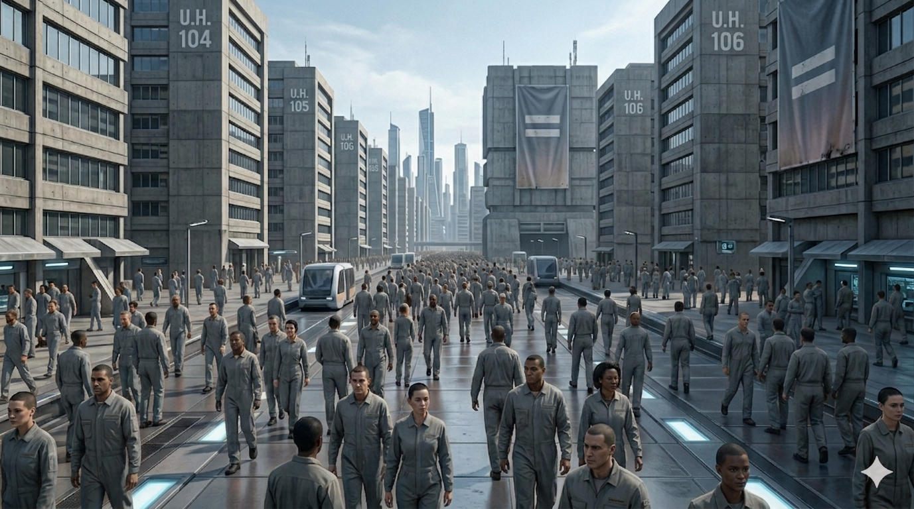
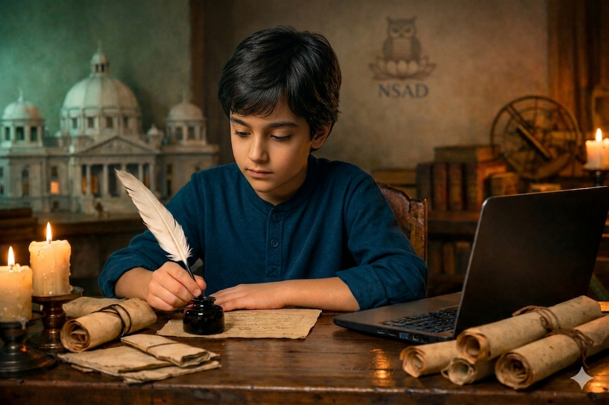
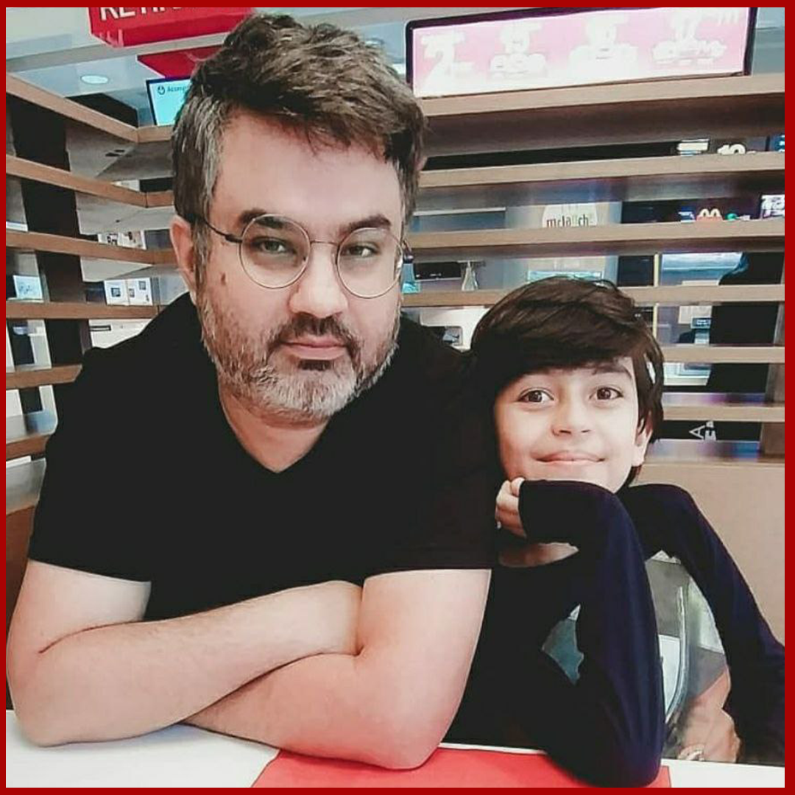

Um Filme De Israel Mattos
Ano de 2110. A humanidade conquistou o teletransporte e a viagem no tempo, mas se perdeu em uma cultura mundial única, onde o hedonismo, o niilismo e o relativismo dominam o modo de existir.
Sob a chamada “PLENA IGUALDADE”, o sistema do novo governo mundial eliminou toda e qualquer forma de identidade e valor das coisas e ações. A “Família”, tratada como a maior ameaça ao Estado, foi perseguida até deixar de existir. Não existem crianças, nem idosos.
Ninguém nasce. Ninguém morre. Tudo é permitido. Tudo é igual. A fé já não existe mais.
Nesse mundo onde os laços familiares foram apagados, um antigo diário de 2020 é encontrado nas ruínas de um museu, escrito por algo visto como inexistente: uma criança. Em suas páginas estão os primeiros sinais da transformação que levou ao colapso… e, talvez, a chave para impedi-lo.
É nesse cenário que um grupo de guerreiros conhecido como NSAD, inspirado justamente nesse diário, decide arriscar tudo, usar o teletransporte para garantir que esse registro sobreviva antes que seja apagado, e com ele, a última memória do que um dia fez a humanidade ser humana.


Nesse mundo onde os laços familiares foram apagados, um antigo diário de 2020 é encontrado... A memória de um tempo esquecido torna-se a maior ameaça ao sistema.

Produtor Artístico | Diretor de Curtas e Videoclipes. Israel Mattos, conhecido como “O General”, atua como produtor artístico e diretor de curtas e videoclipes, com uma trajetória marcada por mais de 200 clipes produzidos. Seu trabalho inclui colaborações com diversos artistas da música brasileira, como Luciano (Zezé Di Camargo), Sérgio Reis, Doctr Sin, e nomes do cenário gospel como Daniel Berg.
"O Diário de Erick Mattos" é o ápice de uma pesquisa sobre o que nos torna verdadeiramente humanos em um mundo corrompido.
Antes de qualquer cena ser filmada, existe uma etapa essencial e invisível: manter a equipe de produção viva e 100% dedicada ao projeto.
Desenvolvimento e manutenção do site oficial.
Criação de conteúdo audiovisual para divulgação, incluindo making of, bastidores e teasers.
Material impresso para divulgação em eventos, universidades e locais estratégicos.
Custos com Uber, passagens e deslocamentos da equipe para reuniões e eventos.
Refeições para a equipe durante reuniões, gravações e eventos de divulgação.
Despesas com deslocamentos para encontros com apoiadores em outras cidades.
Recursos mínimos para que a equipe possa se dedicar integralmente ao projeto.
Porque sem esse apoio, ninguém consegue largar o trabalho para correr atrás do que o projeto precisa: reuniões com políticos, youtubers, influenciadores e podcasts da direita, que podem apoiar e abrir portas para viabilizar o financiamento do filme. Não temos acesso à Lei Rouanet, que prioriza projetos alinhados à ideologia do governo. Também não contamos com empresas privadas, que geralmente investem apenas em artistas já famosos.